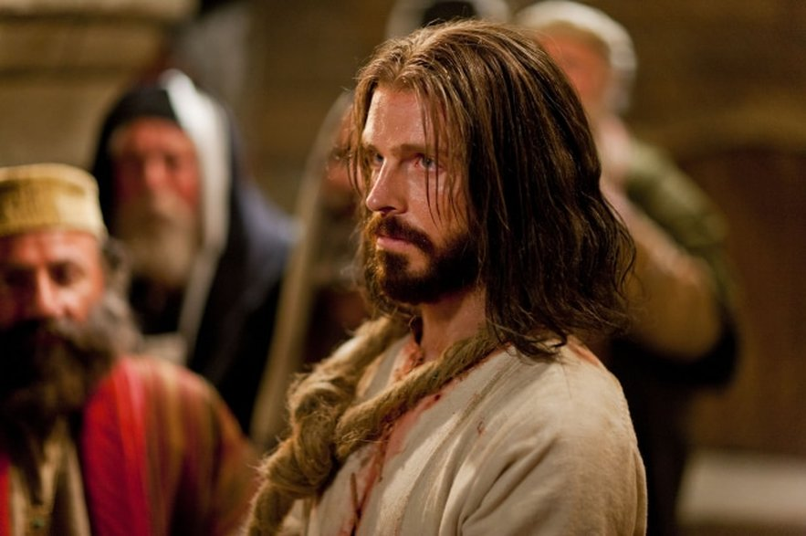

The World of the Text
Isaiah uses imagery and metaphors to describe the suffering of the Savior and His great sacrifice. The way he describes these events as if they have already happened leads us to beleive that he may have seen these things in a vision.
Repeating Themes
The word grief is repeated throughout the text which corresponds to the action words used to describe the treatment of the Savior. These words include despised, rejected, wounded, oppressed, afflicted, and bruised. Isaiah used various words to describe the way in which the Savior suffered for his fellow man, for their transgressions.
Placement in Time
This text refers to things in the past and present and future. For example, Isaiah describes that the Savior "shall grow up before him as a tender plant,” as well as says that Christ “is despised and rejected by men.” Most of the time, however, he speaks as if these things have already happened, declaring things such as "He was oppressed, and he was afflicted.”
Changes in the text
This text does not seem to undergo any change or development. It does generally start talking about the Savior growing up and ends with talking about the reward that he will receive but other than that the text seems to spend the time talking about one thing in particular.
"For he shall grow up before him as a tender plant, and as a root out of a dry ground"
This imagery helps the reader to understand that Christ came out a time where he was out of place. It could be said that there was a spiritual drought in the land and yet He "grew" in the midst of it.
"All we like sheep have gone astray"
Wether during Isaiah's lifetime, the Savior's lifetime, or our own lives, there are times when the people have wandered away from the Lord's teachings. When this happens we lose the protection of the good sheppard.